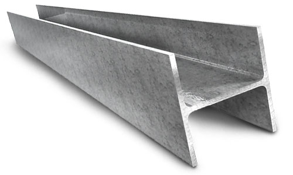

Сварные подкрановые балки из металлоконструкций
Металлическая подкрановая балка представляет собой металлоконструкцию состоящую из трех полос стали, которые сварены по всей своей длине со всех сторон. При этом между полками подкрановой балки ввариваются ребра жесткости, которые увеличивают выдерживаемую подкрановой балкой нагрузку. Set Service Group занимается производством и монтажом подкрановых сварных балок любой сложности по вашему заказу.
Классификация подкрановых балок из металлоконструкций
Существуют различные способы классификации сварных подкрановых балок. Классификация подкрановых балок в зависимости от расположения:
- сплошные;
- сетчатые;
- рядовые;
- концевые.
Классификация подкрановых балок в зависимости от количество опор и особенностей закреплений:
- неразрезные балки(многопролетные);
- разрезные балки(однопролетные).
Изготовление подкрановых балок

Стальные подкрановые балки могут изготавливаться сварными и составными, а составные соединяются сваркой, болтами или клепанием. Сварные балки могут состоять из трех отдельных листов или иметь пояса из тавров. Последние по характеристикам более надежны, поскольку сварные швы не затрагивают зоны основной нагрузки. Готовые изделия должны соответствовать ГОСТу и технологическому проекту. Такие балки используются не только для монтажа открытых крановых путей, но и для сооружения зданий, усиления отдельных колонн. Естественно, что к таким балкам требования весьма высоки.

Балки для обустройства крановых путей укрепляются ребрами жесткости, а их размеры рассчитываются с учетом стандартов и грузоподъемности крана. Процесс производства полностью контролируется, чтобы все технические требования были соблюдены. Сварная балка имеет ряд преимуществ перед железобетоном или прокатным профилем. Прежде всего, это возможность корректировки и выбора нужного веса, благодаря контролю сечения. При этом несущая способность сварных изделий значительно выше, чем у проката.
Для получения консультации по изготовлению подкрановых сварных балок просто оставьте заявку и наши специалисты свяжутся с вами в ближайшее время.